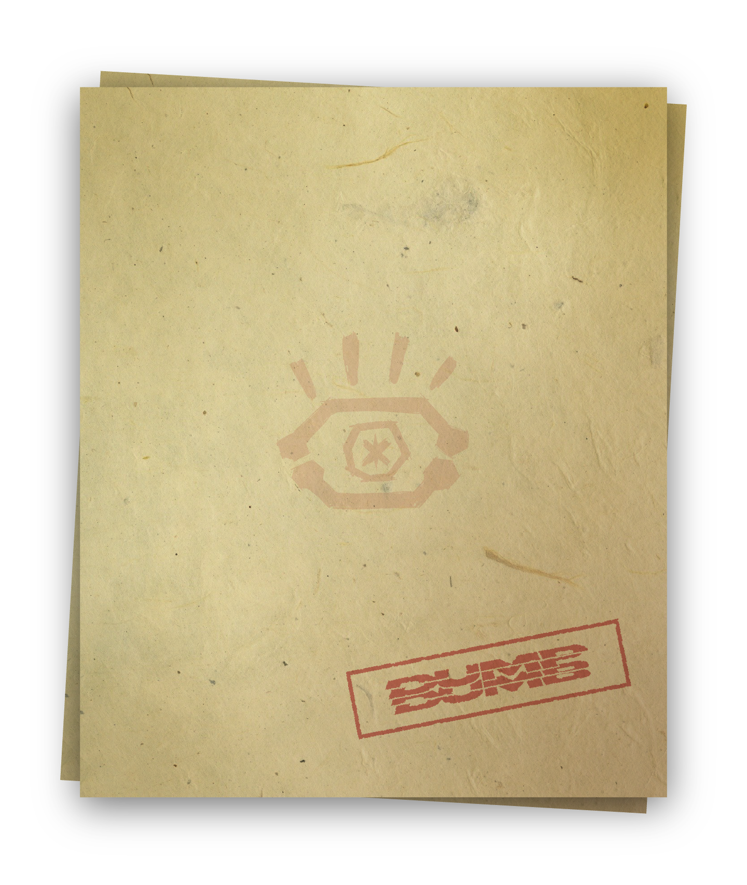

종류: 일회용 커피 컵
소속: 알 수 없음
발견장소: 경산시 하양읍 금락리 115-30 옆
발견일자: 2021년 10월 27일 목요일, 15:08
소속: 알 수 없음
발견장소: 경산시 하양읍 금락리 115-30 옆
발견일자: 2021년 10월 27일 목요일, 15:08
계단에 버려진 두 컵을 보아 이것을 버린 두 사람은 친밀한 사이일 것으로 추측된다. 녹지않은 얼음은 버린지 오래되지 않았음을 의미한다. 버린 사람들이 멀지 않은 곳에 있다.